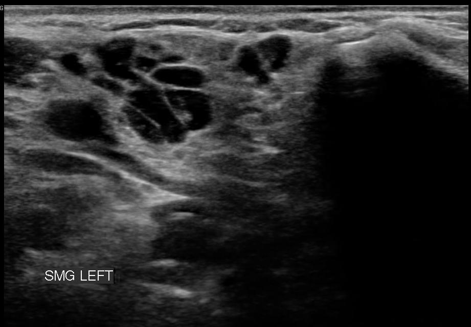
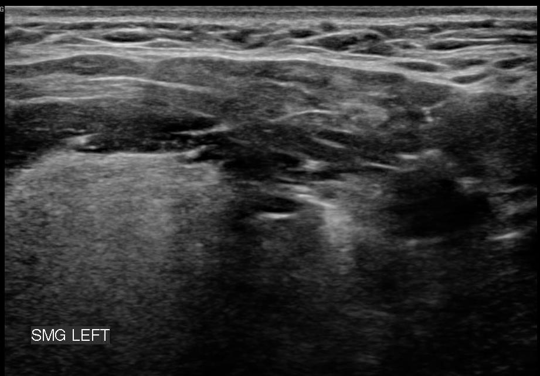
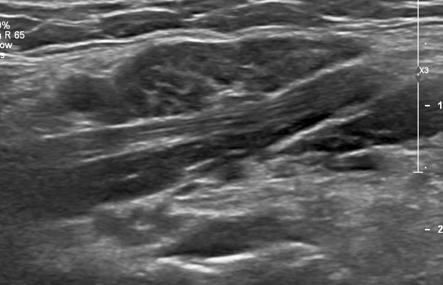
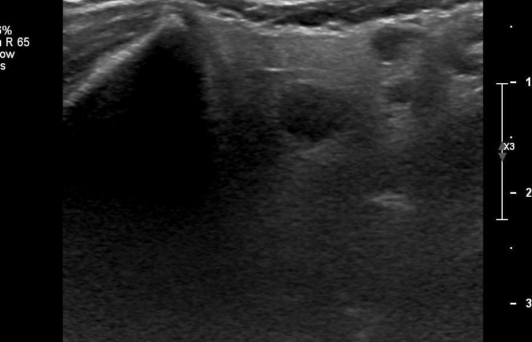
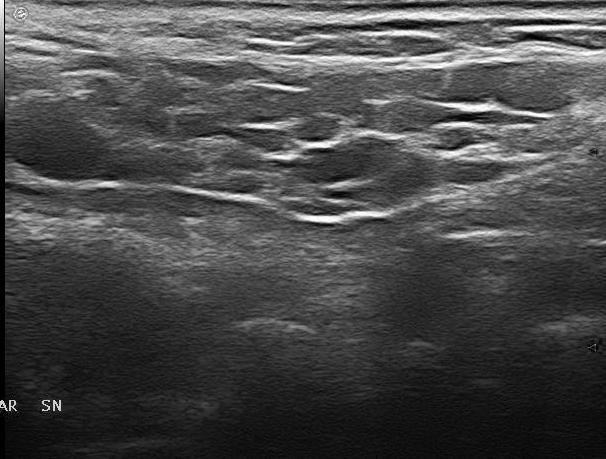
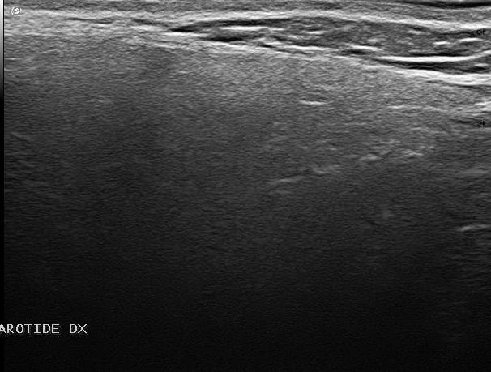
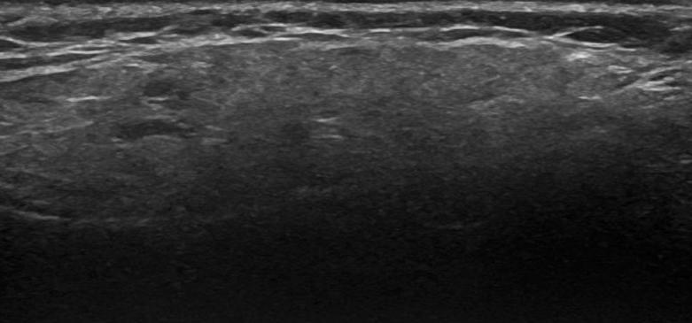
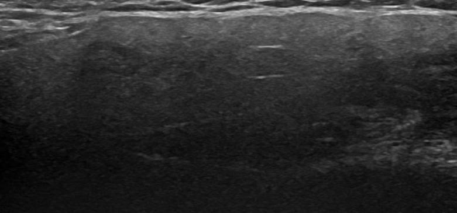

Gradation automatique du syndrome de Sjögren
Prédiction du stade d'atteinte des glandes salivaires (score de De Vita, grades 0 à 3) à partir d'images d'échographie. Le projet avance en deux phases : d'abord une approche boîte noire avec explication post-hoc, puis l'intégration de l'expertise humaine dans la chaîne.
Plan.md.
Le découpage en deux phases
| Phase | Objet | État |
|---|---|---|
| Phase 1 | Approche boîte noire avec explication post-hoc — le modèle ne reçoit que l'image, et l'on cherche après coup ce sur quoi il s'appuie | en cours |
| Phase 2 | Intégration de l'expertise humaine dans la chaîne | différée — périmètre à définir |
Une glande salivaire saine apparaît à l'échographie comme un tissu homogène : une texture régulière, une teinte uniforme. À mesure que la maladie progresse, le tissu se désorganise — des zones sombres (anéchoïques, remplies de liquide ou infiltrées) apparaissent, la texture devient hétérogène, les contours de la glande se brouillent.
Le score de De Vita résume cette dégradation en quatre paliers, de 0 (glande normale) à 3 (atteinte sévère). La difficulté du problème tient à ce que la frontière entre deux grades voisins est graduelle : un grade 1 et un grade 2 se ressemblent bien davantage qu'un grade 0 et un grade 3. C'est pourquoi la matrice de confusion par grade est, pour ce projet, plus informative qu'un score global.
2 · Cadre clinique — ce que l'image contient
Le syndrome de Gougerot-Sjögren est une maladie auto-immune qui attaque les glandes exocrines, au premier rang desquelles les glandes salivaires. L'infiltration lymphocytaire progressive du parenchyme se traduit à l'échographie par une signature essentiellement texturale.
2.1 Sémiologie échographique
Ce tableau sert de grille de lecture pour l'étape 1.4 : les régions que SHAP et LIME désigneront devront être confrontées à ces signes.
| Signe | Traduction visuelle | Ce qu'on attend de l'explication post-hoc |
|---|---|---|
| Hétérogénéité du parenchyme | Alternance désordonnée de zones claires et sombres | Saillance répartie dans le tissu glandulaire, pas sur un bord |
| Zones anéchoïques / hypoéchoïques | Plages sombres bien délimitées dans le tissu | Saillance concentrée sur ces plages pour les grades élevés |
| Perte de définition des contours | Frontière glande / tissu environnant floue | Saillance sur la zone de transition, à distinguer d'un artefact de bord d'image |
| Hypertrophie ou atrophie glandulaire | Variation de taille globale | Information d'échelle — sensible au réglage de l'appareil, donc à interpréter avec prudence |
2.2 Le score de De Vita (0-3)
Score semi-quantitatif de référence, gradant l'atteinte parenchymateuse par paliers. C'est la variable cible du projet. Le Dataset fournit également le score OMERACT, qui pourra servir de contrôle de cohérence.
CrossEntropyLoss
standard ignore cet ordre et pénalise identiquement les deux cas. La phase 1 assume ce choix pour
rester une baseline lisible ; la conséquence sera mesurée par la matrice de confusion
et consignée à l'étape 1.5, sans correction en cours de route.
3 · Dataset — HarmonicSS SGUS benchmark
Corpus public issu d'une étude de fiabilité multicentrique européenne
(doi:10.3389/fmed.2020.581248),
présent dans HarmonicSS benchmark dataset/.
001.jpg … 225.jpg, indexées par la colonne
Anonymized ID du CSV (séparateur ;).







3.1 Répartition réelle du corpus
Chiffres mesurés directement sur Anonymized images - Info.csv. Sélectionnez une
variable pour en voir la distribution.
3.2 Trois contraintes structurelles imposées par ces données
Ces trois points ne sont pas des détails d'implémentation : ils conditionnent la validité de l'ensemble des résultats et sont traités explicitement dès l'étape 1.1.
3.3 Laboratoire — calibrer la pondération des classes
Deux stratégies classiques pour compenser le déséquilibre. Les poids ci-dessous sont calculés sur les effectifs réels du corpus.
β proche de 0 ramène vers une pondération neutre ; β proche de 1 tend vers la pondération inverse pure. Le réglage courant en imagerie médicale se situe entre 0,99 et 0,9999.
Sans pondération, le grade 1 (28 images) contribue quatre fois moins au gradient que le grade 0 (110 images) : le réseau a tout intérêt à l'ignorer purement et simplement. Il apprend alors un raccourci — « dans le doute, réponds 0 » — qui maximise l'accuracy tout en étant cliniquement inutile, puisque manquer une atteinte débutante est précisément l'erreur à éviter.
La pondération rééquilibre artificiellement cette contribution. Le nombre effectif (Cui et al., 2019) raffine l'idée : au-delà d'un certain volume, les images supplémentaires d'une même classe s'informent mutuellement et apportent de moins en moins de nouveauté — le poids ne doit donc pas décroître aussi vite que l'inverse de l'effectif.
4 · Vue de la phase 1 — boîte noire et explication post-hoc
Cinq étapes enchaînées. L'étape 1.5 — analyse, interprétation et limites — est un livrable à part entière, au même titre que le code : c'est elle qui détermine le périmètre de la phase 2.
flowchart LR
subgraph A["1.1 · Données"]
RAW["Image brute
SGUS"] --> CLEAN["Nettoyage artefacts
+ normalisation"]
META["CSV métadonnées"] --> SPLIT["Split groupé
par patient"]
end
subgraph B["1.2 · Boîte noire"]
CLEAN --> CNN["CNN scratch"]
CLEAN --> RES["ResNet18/50"]
CLEAN --> VIT["ViT"]
end
subgraph C["1.3 · Évaluation"]
CNN --> EV["k-fold groupé
bootstrap · LOCO"]
RES --> EV
VIT --> EV
SPLIT --> EV
end
subgraph D["1.4 · Explication post-hoc"]
RES --> SHAP["SHAP"]
RES --> LIME["LIME"]
SHAP --> RHO["Concordance
ρ · stabilité"]
LIME --> RHO
end
EV --> ANA["1.5 · Analyse
interprétation
limites"]
RHO --> ANA
ANA --> P2["Phase 2
périmètre à définir"]
style A fill:#14532d,stroke:#4ade80,color:#dbe2f0
style B fill:#1e2a4a,stroke:#818cf8,color:#dbe2f0
style C fill:#3a2d14,stroke:#fbbf24,color:#dbe2f0
style D fill:#2a1f3d,stroke:#a78bfa,color:#dbe2f0
style ANA fill:#4a1d1d,stroke:#f87171,stroke-width:2px,color:#dbe2f0
style P2 stroke-dasharray: 5 5
click RAW noop "Image d'échographie des glandes salivaires (SGUS) telle qu'acquise par l'appareil, avant tout traitement."
click CLEAN noop "Suppression des incrustations (texte, bords de sonde) et normalisation de l'intensité des pixels."
click META noop "Fichier CSV des métadonnées cliniques : identifiant patient, centre, grade De Vita, type de glande, appareil."
click SPLIT noop "Découpage entraînement/validation/test par StratifiedGroupKFold : un même patient ne peut apparaître dans plusieurs plis."
click CNN noop "Réseau convolutif entraîné from scratch, sans poids pré-entraînés — référence basse de la comparaison."
click RES noop "ResNet18/50 pré-entraîné sur ImageNet, affiné par transfer learning sur le corpus SGUS."
click VIT noop "Vision Transformer : architecture à base d'attention appliquée aux patches de l'image."
click EV noop "Validation croisée groupée par patient, intervalles de confiance par bootstrap, et leave-one-center-out (LOCO) pour tester la généralisation inter-site."
click SHAP noop "SHapley Additive exPlanations : attribution de la contribution de chaque région de l'image à la prédiction."
click LIME noop "Local Interpretable Model-agnostic Explanations : approximation locale par superpixels expliquant une prédiction individuelle."
click RHO noop "Coefficient de concordance ρ et stabilité entre les cartes d'attribution SHAP et LIME."
click ANA noop "Étape 1.5 — livrable à part entière : synthèse critique des performances et des limites de l'explication post-hoc. Détermine le périmètre de la phase 2."
click P2 noop "Phase suivante du projet ; périmètre défini à l'issue de l'étape 1.5."
Arborescence de code
implémentation en cours — arborescence en place dans sjogren/,
modules implémentés au fil des étapes. Un module marqué fait est écrit,
exécutable et vérifié ; les autres restent des fichiers de réservation.
# structure — phase 1 uniquement
sjogren/
├── data/
│ ├── metadata.py # FAIT — lecture CSV, identité patient, audit des collisions
│ ├── splits.py # découpage groupé par patient, k-fold, leave-one-center-out
│ ├── preprocess.py # nettoyage des artefacts, normalisation d'intensité
│ └── dataset.py # SjogrenDataset (image seule)
├── models/
│ ├── baseline_cnn.py # CNN from scratch
│ ├── resnet.py # transfer learning
│ └── vit.py # Vision Transformer
├── train/
│ ├── loop.py # boucle d'entraînement, AdamW, perte pondérée
│ └── metrics.py # F1 macro, sensibilité, spécificité, bootstrap
└── xai/
├── shap_maps.py # attributions SHAP
├── lime_maps.py # superpixels LIME
├── overlap.py # recouvrement ρ, concordance SHAP/LIME
└── stability.py # sensibilité aux graines et aux perturbations
tests/
├── test_metadata.py # FAIT — intégrité du corpus, identité patient, collisions
└── test_splits.py # aucun patient partagé entre plis, 4 grades par pli5 · Étape 1.1 — Pipeline de données et garanties d'intégrité
Objectif — produire un DataLoader dont on peut démontrer
qu'il ne fuit pas et qu'il ne présente au modèle que du tissu.
flowchart TB A["CSV métadonnées"] --> B["Reconstitution identité patient
centre + sexe + âge + durée"] B --> C["Découpage groupé par patient
StratifiedGroupKFold"] D["Image 001.jpg"] --> E["Détection des incrustations
texte, bords de sonde"] E --> F["Crop + masquage"] F --> G["Normalisation d'intensité
inter-appareils"] G --> H["Augmentation"] H --> I["SjogrenDataset
image seule"] C --> I I --> J["Tests d'intégrité
aucun patient partagé
4 grades par pli"] style C fill:#4a1d1d,stroke:#f87171,color:#dbe2f0 style F fill:#14532d,stroke:#4ade80,color:#dbe2f0 style J fill:#3a2d14,stroke:#fbbf24,color:#dbe2f0
Le corpus contient deux images par patient — la parotide et la sous-mandibulaire, prises lors du même examen, sur le même appareil, chez la même personne. Si l'une part en entraînement et l'autre en test, le modèle n'a pas besoin d'apprendre la maladie : il lui suffit de reconnaître le patient, ce qu'un réseau profond fait remarquablement bien.
Le score obtenu serait alors excellent et entièrement trompeur. Pire, l'erreur est silencieuse : rien dans les courbes d'entraînement ne la signale. C'est pourquoi l'absence de patient partagé entre plis est vérifiée par un test automatique, et non par une relecture du code.
L'encadré ci-dessus affirmait deux images par patient. La mise en œuvre de
data/metadata.py mesure 2,53 images par groupe en moyenne, avec des
groupes de 1 à 8 images. L'affirmation est conservée telle quelle pour la trace, mais elle ne
décrit pas le corpus. Le raisonnement sur la fuite, lui, reste entièrement valide — il est même
renforcé : plus un patient contribue d'images, plus la fuite serait sévère.
Deux causes distinctes se superposent et ne sont pas démêlables à partir du CSV seul : une acquisition bilatérale (jusqu'à quatre images légitimes pour un patient : parotide et sous-mandibulaire, droite et gauche) et une fusion de patients distincts partageant la même signature démographique. Le détail est donné plus bas.
Reconstitution de l'identité patient — ce que la mesure a établi
Le CSV ne fournit aucun identifiant patient : l'Anonymized ID identifie une
image. L'identité est donc reconstituée par la signature
centre + sexe + âge + durée de maladie. Résultat mesuré sur les 225 images :
| Grandeur | Valeur | Nature |
|---|---|---|
| Images | 225 | analytique |
| Patients reconstitués | 89 | analytique |
| Images par patient | 2,53 en moyenne — de 1 à 8 | analytique |
| Groupes portant un indice de fusion | 12 sur 89 | analytique |
Les deux erreurs possibles n'ont pas le même coût. Sur-regrouper — fusionner deux patients distincts — réduit le nombre de groupes indépendants : moins de puissance statistique, stratification par grade plus difficile, plis plus déséquilibrés. Sous-regrouper — scinder un patient réel entre deux plis — crée la fuite silencieuse décrite plus haut et invalide toutes les métriques en aval.
La signature démographique ne peut se tromper que dans un sens : deux images d'un même patient partagent nécessairement centre, sexe, âge et durée, donc elles atterrissent toujours dans le même groupe. La clé fusionne, elle ne scinde jamais. C'est la raison pour laquelle elle est conservée telle quelle malgré ses collisions : elle se trompe du côté sûr. Le prix payé est mesuré et reporté, il n'est pas dissimulé.
Corollaire pour l'interprétation des résultats : les 89 groupes sont une borne inférieure du nombre réel de patients. Les intervalles de confiance calculés par rééchantillonnage sur ces groupes seront donc plutôt conservateurs — ce qui est l'erreur acceptable.
Collisions d'identité recensées
Trois indices indépendants de fusion sont recherchés automatiquement par
audit_patient_identity() et signalés à chaque chargement des métadonnées :
| Indice | Critère | Groupes concernés | Force de l'indice |
|---|---|---|---|
| Taille au-delà du plausible | plus de 4 images (2 glandes × 2 côtés) | 3 — dont un groupe de 8 et deux de 6 | forte |
| Glande en surnombre | plus de 2 images d'un même type de glande | 6 | forte — un patient n'a que deux parotides |
| Identifiants non contigus | Anonymized ID éloignés dans la numérotation | 9 | heuristique — repose sur une régularité observée de la numérotation, non documentée |
disease duration vaut 0 pour les 50 images de Ljubljana.
La signature y perd une de ses quatre dimensions et se réduit à
centre + sexe + âge : le sur-regroupement y est mécaniquement plus fort qu'ailleurs.
Conséquence à retenir au moment du leave-one-center-out : le pli Ljubljana n'a pas la même
granularité de groupement que les trois autres, et un écart de performance sur ce centre ne peut
pas être attribué au seul appareil Philips.
2 dans fulfillment of 2016 ACR-EULAR classification
criteria, dont le domaine attendu est {0, 1}. Signalée à chaque chargement, elle
n'est ni corrigée ni écartée : cette colonne n'intervient ni comme cible ni comme entrée, et une
correction arbitraire serait une réécriture de la source.
Livrables de l'étape
| Livrable | Module prévu | Statut |
|---|---|---|
| Lecture du CSV et reconstitution de l'identité patient + audit des collisions d'identité, validation des domaines de valeurs, inspection en ligne de commande | data/metadata.py | fait 2026-09-21 |
| Découpage groupé par patient, stratifié par grade | data/splits.py | à faire |
| Nettoyage des artefacts et normalisation d'intensité | data/preprocess.py | à faire |
SjogrenDataset et augmentations | data/dataset.py | à faire |
| Tests d'intégrité des métadonnées corpus, déterminisme de l'identité, détection des collisions, typage, anomalies de domaine | tests/test_metadata.py | fait 2026-09-21 — 23/23 |
| Tests d'intégrité du découpage | tests/test_splits.py | à faire |
La ligne tests/test_metadata.py a été ajoutée au tableau :
le plan initial ne prévoyait de tests que pour le découpage, mais les garanties portées par les
métadonnées (déterminisme de l'identité patient, absence d'image perdue, préservation du typage
entier) se violent silencieusement et méritent le même verrouillage automatique.
Les six invariants retenus partagent une propriété : leur violation ne lève aucune exception. Elle produit des chiffres plausibles et faux.
| Invariant | Panne silencieuse évitée |
|---|---|
| 225 lignes, distribution 110/28/55/32 | un corpus modifié en amont invaliderait la pondération de la perte et la stratification, calibrées sur cette distribution |
| Aucune image perdue, aucune orpheline | un échantillon fantôme ne planterait qu'au premier passage du DataLoader, après des heures d'entraînement |
Déterminisme de patient_id | des identifiants instables donneraient des plis différents à graine identique : résultats irreproductibles sans message d'erreur |
| Une même signature ne se scinde jamais | c'est la propriété qui empêche la fuite ; sa perte est exactement le scénario que l'étape 1.1 existe pour prévenir |
| Détection des trois indices de collision | un auditeur devenu muet laisserait croire à un corpus propre ; un cas de contrôle négatif vérifie aussi qu'il ne signale pas tout |
Typage Int64 nullable | en entier classique, une cellule vide promeut la colonne en flottant et devita passe de 3 à 3.0 — comparaisons d'étiquettes et matrices de confusion faussées sans erreur |
Un septième test verrouille l'accord entre le code et les pages de suivi : 89 patients, 12 groupes suspects, F1 macro trivial de 0,164. S'il casse, ce sont les pages qu'il faut corriger, pas le test qu'il faut assouplir.
pytest ne figure pas dans la pile déclarée de la phase 1 et n'est pas installé dans
l'environnement. Le fichier respecte les conventions pytest (fonctions test_*,
assert nu) et embarque un exécuteur de repli :
python tests/test_metadata.py fonctionne aujourd'hui sans rien installer, et
pytest tests/ ramassera le même fichier le jour où l'outil sera adopté. L'ajout d'une
dépendance d'outillage reste une décision à arbitrer séparément.
Les sept tests qui dépendent du corpus réel se sautent proprement s'il est absent ; les
seize autres tournent sur des corpus factices.
DataLoader produisant des lots d'images nettoyées, les contrôles d'intégrité au vert
et reportés dans results.html, et une planche de contrôle visuel des
régions extraites pour chacun des quatre appareils.
6 · Étape 1.2 — Modèles boîte noire
Objectif — entraîner les classifieurs sur l'image seule, en configuration multiclasse (grades De Vita 0-3).
Les trois architectures et ce qu'elles testent
| Modèle | Rôle dans l'étude | Hypothèse testée |
|---|---|---|
| CNN from scratch 3 à 5 couches conv. | Référence interne | Quelle performance atteint-on sans connaissance externe, sur 225 images seulement ? |
| ResNet18 / ResNet50 pré-entraîné ImageNet | Bras principal | Le transfert depuis les images naturelles compense-t-il la petite taille du corpus ? |
| ViT pré-entraîné | Comparaison d'état de l'art | L'attention globale capture-t-elle l'hétérogénéité mieux que les convolutions locales ? |
Fonction de perte et sélection de modèle
Optimiseur AdamW, poids $w_k$ calibrés selon la section 3.3. Le modèle retenu est celui qui maximise le F1 macro en validation — jamais l'accuracy, qui récompense le raccourci « tout grade 0 ».
Livrables de l'étape
| Livrable | Module prévu | Statut |
|---|---|---|
| CNN from scratch | models/baseline_cnn.py | à faire |
| ResNet18/50 adapté multiclasse et binaire | models/resnet.py | à faire |
| Vision Transformer | models/vit.py | à faire |
| Boucle d'entraînement, AdamW, perte pondérée | train/loop.py | à faire |
7 · Étape 1.3 — Protocole d'évaluation
Objectif — produire des chiffres défendables, et non un score unique issu d'un découpage favorable. Sur 225 images, la variance entre découpages est forte.
Schémas de validation
| Schéma | Ce qu'il mesure | Contrainte respectée |
|---|---|---|
| k-fold stratifié groupé | Performance moyenne et sa variabilité | Groupement par patient · stratification par grade |
| Leave-one-center-out | Généralisation à un appareil jamais vu | Teste directement la confusion centre/appareil |
| Bootstrap sur le test | Intervalles de confiance de chaque métrique | Rééchantillonnage au niveau patient |
Métriques rapportées
| Métrique | Pourquoi |
|---|---|
| F1 macro | Métrique de sélection — traite les quatre grades à parité malgré le déséquilibre |
| Sensibilité par grade | Manquer une atteinte débutante (grade 1) est l'erreur cliniquement la plus coûteuse |
| Spécificité | Limiter les faux positifs, qui déclencheraient des explorations inutiles |
| Matrice de confusion | Distingue les confusions entre grades voisins (tolérables) des confusions extrêmes (graves) |
| AUC | Comparabilité avec la littérature, en one-vs-rest pour le multiclasse |
| Accuracy | Rapportée pour référence uniquement — jamais utilisée pour sélectionner un modèle |
8 · Étape 1.4 — Explication post-hoc
Objectif — déterminer après coup sur quoi le modèle fonde ses décisions, avec deux méthodes indépendantes, et mesurer jusqu'où ces explications sont fiables.
flowchart LR M["Modèle entraîné
boîte noire"] --> S["SHAP
attributions par pixel"] M --> L["LIME
superpixels"] S --> C["Concordance
SHAP ∩ LIME"] L --> C S --> O["Recouvrement ρ
avec la région glandulaire"] L --> O S --> ST["Stabilité
graines · perturbations"] L --> ST C --> R["Lecture croisée
avec la sémiologie clinique"] O --> R ST --> R R --> A["1.5 · Analyse et limites"] style A fill:#4a1d1d,stroke:#f87171,stroke-width:2px,color:#dbe2f0
8.1 Deux méthodes, deux angles
| Méthode | Principe | Force | Limite |
|---|---|---|---|
SHAPDeepExplainer / GradientExplainer | Attribution par pixel fondée sur les valeurs de Shapley, via les gradients internes | Granularité fine, fondement théorique | Coûteux, sensible au choix des données de référence |
LIMElime_image | Modèle linéaire local appris sur des perturbations de superpixels | Lisible, agnostique au modèle | Dépend fortement de la segmentation en superpixels |
SHAP et LIME reposent sur des principes différents : le premier décompose la prédiction en contributions théoriquement fondées, le second approche localement le modèle par une régression lisible. Une explication produite par une seule méthode peut être un artefact de la méthode plutôt qu'une propriété du modèle.
Quand deux approches indépendantes désignent la même région, l'explication devient nettement plus défendable devant un clinicien — et devant un jury. C'est la logique de la triangulation en méthodologie expérimentale.
8.2 Mesure du focus anatomique
Plutôt que de juger les cartes de saillance à l'œil, on quantifie la fraction de la saillance qui tombe dans la région glandulaire :
avec $a_p$ l'attribution du pixel $p$. Un $\rho$ élevé signifie que le modèle regarde bien la glande. Cette mesure est comparable entre modèles et entre conditions, ce qui en fait un critère d'évaluation à part entière — et non une simple illustration.
Ce masque est employé exclusivement comme instrument de mesure : il n'entre jamais dans l'image fournie au réseau. Le modèle reste une boîte noire nourrie de l'image seule ; le masque sert uniquement à évaluer où tombe la saillance de ses explications. L'utiliser comme filtre d'entrée reviendrait à fournir au modèle une région tracée par des experts — cela relèverait de la phase 2.
8.3 Stabilité — la mesure qu'on oublie souvent
Une carte de saillance qui change lorsqu'on change la graine aléatoire, la segmentation en superpixels ou le jeu de référence de SHAP ne dit rien de fiable sur le modèle. La phase 1 mesure donc explicitement :
- la variation des cartes entre graines différentes ;
- la sensibilité de LIME au nombre et à la taille des superpixels ;
- la sensibilité de SHAP au choix des données de référence ;
- la variation sous petites perturbations de l'image d'entrée.
8.4 Explications des erreurs
Les cartes des cas mal classés sont analysées au même titre que celles des cas corrects, par grade. C'est souvent là que se lit le mécanisme réel de la décision.
Livrables de l'étape
| Livrable | Module prévu | Statut |
|---|---|---|
| Cartes d'attribution SHAP | xai/shap_maps.py | à faire |
| Superpixels LIME | xai/lime_maps.py | à faire |
| Recouvrement ρ et concordance SHAP/LIME | xai/overlap.py | à faire |
| Analyse de stabilité | xai/stability.py | à faire |
9 · Étape 1.5 — Analyse, interprétation et limites
Objectif — interpréter les résultats et énoncer honnêtement leur portée. Cette étape ne produit pas de code : elle produit le raisonnement qui sera défendu devant l'encadrant, puis repris dans le manuscrit.
Les cinq questions auxquelles l'étape doit répondre
| # | Question | Éléments mobilisés |
|---|---|---|
| 1 | Sur quoi le modèle s'appuie-t-il réellement ? Les régions saillantes correspondent-elles à la sémiologie clinique (section 2.1) ou à autre chose ? | ρ, concordance SHAP/LIME, lecture croisée avec les signes cliniques |
| 2 | Où échoue-t-il ? Comportement sur le grade 1 (28 images), confusions entre grades voisins, cas systématiquement mal classés | Matrice de confusion, sensibilité par grade, cartes des erreurs |
| 3 | A-t-il appris l'appareil ? Lecture de l'écart entre k-fold et leave-one-center-out | LOCO, cartes de saillance par centre |
| 4 | Les explications sont-elles fiables ? Ce que SHAP et LIME établissent réellement, leurs désaccords, leur dépendance aux réglages | Mesures de stabilité (8.3), désaccords SHAP/LIME |
| 5 | Que l'approche boîte noire ne peut-elle pas apporter ? | Synthèse des quatre questions précédentes |
10 · Intégrité scientifique
Les règles ci-dessous sont posées à l'ouverture de la phase, avant toute mesure, pour que les résultats restent interprétables et défendables.
| Règle | Raison |
|---|---|
| Le découpage est groupé par patient, sans exception | Seul rempart contre la fuite de données, qui invaliderait l'ensemble des résultats |
| Le jeu de test n'est consulté qu'une seule fois, en fin d'étape | Chaque décision prise en regardant le test le transforme en jeu de validation déguisé |
| Tout chiffre affiché provient d'un run tracé | Aucune valeur recopiée de mémoire ou estimée |
| Les hypothèses sont écrites avant la mesure | Empêche la réinterprétation a posteriori d'un résultat décevant |
| Un résultat négatif est consigné, pas effacé | Une performance faible ou des explications instables sont des informations, pas des échecs à masquer |
| Les graines aléatoires sont fixées et reportées | Reproductibilité sur un corpus où la variance entre découpages est forte |
| Rien n'est documenté qui ne soit arrêté | Une page de suivi décrivant des travaux non engagés induit en erreur sur l'état réel du projet |
11 · Phase 2 — intégration de l'expertise humaine
Le périmètre de cette phase sera défini avec l'encadrant à l'issue de la phase 1. Aucun choix technique n'est arrêté, et aucun développement n'est engagé.
Les pistes ci-dessous ont été évoquées au cours du cadrage du projet et sont conservées comme mémoire de travail. Elles ne constituent pas un engagement et ne sont pas détaillées tant que la phase 1 n'a pas établi ses limites :
- descripteurs de texture calculés et points d'intérêt structurels injectés en amont du réseau ;
- régions d'intérêt ou annotations fournies par un clinicien ;
- alignement vision-langage à partir d'un lexique clinique.
12 · Statut d'implémentation & feuille de route
Plan.md) ·
acquisition et inspection du corpus HarmonicSS · caractérisation statistique des 225 images ·
identification des trois contraintes structurelles · protocole d'évaluation fixé ·
documents de suivi et de résultats.data/metadata.py écrit et exécuté
(89 patients reconstitués, collisions auditées), verrouillé par tests/test_metadata.py
(23 tests, tous passants). Restent le découpage groupé, le nettoyage des artefacts,
SjogrenDataset et les tests du découpage.flowchart LR A["Fait
Cadrage · corpus
contraintes · protocole"] --> B["1.1
Split groupé patient
nettoyage artefacts
tests d'intégrité"] --> C["1.2
CNN · ResNet · ViT
image seule
multiclasse 0-3"] --> D["1.3
k-fold · bootstrap
leave-one-center-out"] --> E["1.4
SHAP + LIME
ρ · concordance
stabilité"] --> F["1.5
Analyse
interprétation
limites"] --> G["Phase 2
expertise humaine
périmètre à définir"] style A fill:#14532d,stroke:#4ade80,color:#dbe2f0 style B fill:#1e2a4a,stroke:#818cf8,stroke-width:2px,color:#dbe2f0 style F fill:#4a1d1d,stroke:#f87171,color:#dbe2f0 style G stroke-dasharray: 5 5
Tableau de bord des résultats
Ce tableau se remplit au fil des runs. aucune mesure disponible Détail complet et traçabilité : page résultats.
| Modèle | Tâche | F1 macro | Sensibilité grade 1 | ρ (focus ROI) | Run |
|---|---|---|---|---|---|
| CNN scratch | multiclasse 0-3 | — | — | — | — |
| ResNet18 | multiclasse 0-3 | — | — | — | — |
| ResNet50 | multiclasse 0-3 | — | — | — | — |
| ViT | multiclasse 0-3 | — | — | — | — |
| Classifieur trivial | multiclasse 0-3 | 0.164 | 0.000 | — | analytique |
Hiérarchie des sources du projet
| Document | Statut |
|---|---|
Plan.md | autoritatif plan de travail et découpage en phases |
HarmonicSS benchmark dataset/Anonymized images - Info.csv | seule source des annotations et métadonnées |
outputs/<run_id>/metrics.json | seule source d'une valeur de performance |
.claude/agents/sjogren-dl-engineer.md | autoritatif contexte de développement |
research_works.html (ce document) | vivant méthodologie et suivi des étapes |
results.html | vivant tous les résultats chiffrés, étape par étape |
13 · Journal des travaux
Trace chronologique des décisions et des étapes franchies. Une ligne par événement marquant.
| Date | Événement | Détail |
|---|---|---|
2026-09-19 |
Ouverture du suivi | Création des documents de suivi et de résultats. Protocole d'évaluation fixé avant toute mesure. |
2026-09-19 |
Caractérisation du corpus | 225 images inspectées. Distribution des grades De Vita établie (110 / 28 / 55 / 32). Trois contraintes structurelles identifiées : fuite patient, confusion centre/appareil, déséquilibre de classes. |
2026-09-20 |
Restructuration en deux phases | Sur retour de l'encadrant : le projet est redécoupé en phase 1 (boîte noire + explication post-hoc) et phase 2 (intégration de l'expertise humaine, périmètre à définir). L'avancement se fait phase par phase, chacune devant être achevée et analysée avant l'ouverture de la suivante. |
2026-09-20 |
Ingénierie des caractéristiques reportée en phase 2 | Les descripteurs de texture calculés (GLCM, LBP) et les points d'intérêt sont retirés de la phase 1 : injecter des caractéristiques conçues par un humain relève de l'expertise dans la chaîne. La phase 1 travaille sur l'image seule. Seul le nettoyage des artefacts d'acquisition est conservé, au titre de l'hygiène des données. |
2026-09-20 |
Région de référence pour ρ — masques de segmentation en instrument de mesure | Le calcul du recouvrement ρ (étape 1.4) s'appuiera sur les modèles de segmentation de glande pré-entraînés publiés avec le corpus HarmonicSS, ce qui évite un travail d'annotation manuelle. Ces masques sont déclarés instrument de mesure uniquement : ils n'entrent jamais dans l'image fournie au réseau. Les employer comme filtre d'entrée relèverait de la phase 2. |
2026-09-20 |
Retrait du contenu non arrêté | Les développements relatifs à l'alignement vision-langage et à l'architecture RAG sont retirés des documents de suivi et de résultats : ils ne font l'objet d'aucun engagement. Ils figurent désormais comme pistes non arrêtées de la phase 2. |
2026-09-21 |
Étape 1.1 — data/metadata.py implémenté |
Première brique de code du projet. Lecture du CSV, normalisation des en-têtes, contrôle des domaines de valeurs, reconstitution de l'identité patient et audit des collisions. Le module est déclaré seule porte d'entrée vers les métadonnées : aucun autre module ne relit le CSV. |
2026-09-21 |
Décision — reconstitution d'identité conservatrice, collisions auditées plutôt que résolues | La signature centre + sexe + âge + durée est conservée telle quelle malgré ses
collisions, parce qu'elle ne peut que fusionner des patients distincts, jamais scinder un patient
réel : elle se trompe du côté qui ne crée pas de fuite. Aucune heuristique de dé-fusion n'est
appliquée — elle risquerait de scinder un patient réel, soit exactement l'erreur que le découpage
groupé cherche à empêcher. Les 89 groupes sont donc une borne inférieure du nombre de patients, et
les intervalles de confiance qui en découleront seront conservateurs. |
2026-09-21 |
Constat — « deux images par patient » invalidé par la mesure | 2,53 images par groupe en moyenne, de 1 à 8. 12 groupes sur 89 portent un indice de fusion. L'affirmation antérieure est conservée dans le document, assortie d'un avertissement daté. Le raisonnement sur la fuite n'est pas affaibli, il est renforcé. |
2026-09-21 |
Étape 1.1 — tests/test_metadata.py implémenté |
23 tests, tous passants. Verrouillent les invariants dont la violation serait silencieuse : intégrité du corpus, déterminisme de l'identité patient, non-scission d'une signature, détection des trois indices de collision (avec cas de contrôle négatif), typage entier nullable, signalement non bloquant des anomalies de domaine. Un test supplémentaire verrouille l'accord entre le code et les chiffres publiés dans les documents de suivi. Ligne ajoutée au tableau des livrables de l'étape, qui ne prévoyait de tests que pour le découpage. |
2026-09-21 |
Décision — aucune dépendance de test ajoutée | pytest n'est pas dans la pile déclarée de la phase 1 et n'est pas installé.
Les tests suivent ses conventions mais embarquent un exécuteur de repli, de sorte qu'ils soient
vérifiables immédiatement sans arbitrage d'outillage. Les tests dépendant du corpus réel se
sautent proprement s'il est absent. |
2026-09-21 |
Constat — disease duration constante à Ljubljana |
Valeur 0 pour les 50 images du centre : la signature d'identité y perd une dimension. À prendre en compte dans l'interprétation du leave-one-center-out — le pli Ljubljana n'a pas la même granularité de groupement que les autres. |